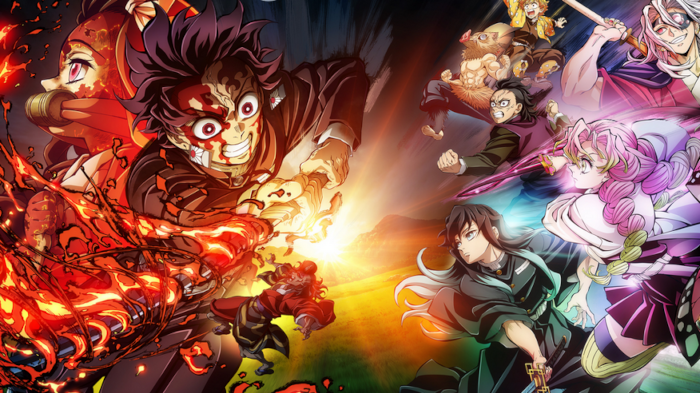

Kimetsu no Yaiba (Demon Slayer):A história segue Tanjiro Kamado, um jovem que vive em um mundo onde demônios devoram humanos. Quando sua família é massacrada por demônios e sua irmã, Nezuko, é transformada em um deles, Tanjiro se junta ao Demon Slayer Corps para encontrar uma cura para sua irmã e vingar sua família, enfrentando poderosos inimigos no processo.
|  | Estes são alguns dos personagens mais importantes da animação. |